25.10.2026 | CZY TO BĘDZIE PRZYJAŹŃ NA CAŁE ŻYCIE?
Na razie każdy pilnuje swojego legowiska, ale… coś czujemy, że to dopiero początek pięknej znajomości!
Starszy kolega patrzy z miną: „Dobra, młody, pokażę ci, jak tu wygląda życie…”
A młody owczarek niemiecki już chyba planuje, jak przejąć nie tylko serce, ale i połowę kanapy!
Jeszcze trochę wspólnych drzemek, kilka psot, może parę negocjacji o zabawki i miski… i kto wie? Być może za chwilę będą nierozłączni!
Jedno jest pewne – w tym domu nudy raczej nie będzie!
A Wy jak myślicie? Będzie wielka przyjaźń czy jednak walka o tytuł króla legowiska?
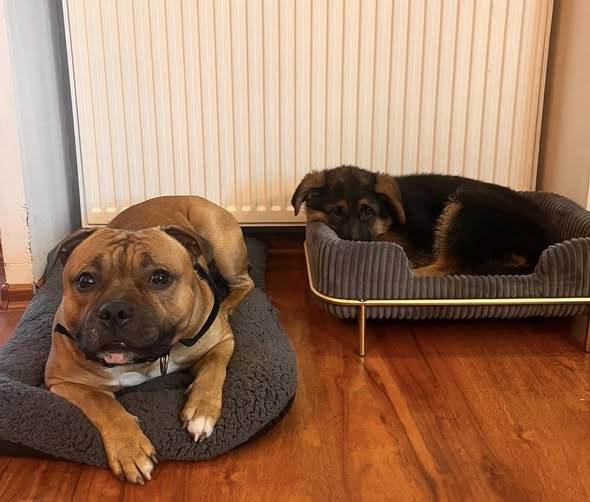
24.10.2026 | KOLEJNA SUCZKA, KOLEJNA PIĘKNA HISTORIA!
Dziś kolejna nasza dziewczynka opuściła hodowlę vom Lauferhaus i rozpoczęła nowy rozdział życia u boku wspaniałych ludzi!
Takie chwile cieszą nas najbardziej – kiedy patrzymy, jak nasze maluchy trafiają do kochających domów, w których będą otoczone troską, miłością i staną się pełnoprawnymi członkami rodziny.
Dziękujemy za zaufanie, którym nas obdarzyliście! Życzymy Wam mnóstwa wspólnych przygód, pięknych chwil i wyjątkowej więzi, która z każdym dniem będzie coraz silniejsza.
Niech ta mała dziewczynka wniesie do Waszego domu mnóstwo radości i psiej miłości!
Powodzenia, mała! Niech zaczyna się Wasza wspólna, piękna historia!
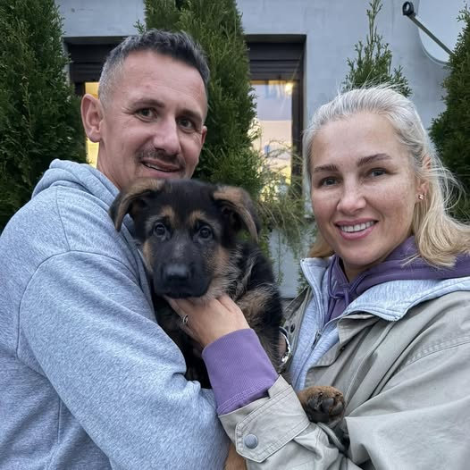
23.10.2026 | DZIEŃ DOBRY, JESIENI!
Piękne jesienne kolory idealnie pasują do tej dziewczyny!
Przedstawiamy naszą uroczą suczkę, która 21 października skończyła 8 tygodni i powoli rozgląda się za swoim człowiekiem.
To dziewczyna z charakterem!
Świetna dynamika, wspaniały temperament i mnóstwo energii. Na nasze oko – prawdziwa kopia swojej mamy!
Szukamy dla niej odpowiedzialnego domu, który doceni jej potencjał, charakter i wyjątkowe pochodzenie.
SKOJARZENIE:
Ojciec: Hyltelands RIO
Matka: Hyltelands ULME
KONTAKT: ajer@interia.pl
TELEFON: 696 239 735
Jeśli szukasz wiernej towarzyszki, która wniesie do Twojego życia mnóstwo radości i energii, być może właśnie na Ciebie czeka ta mała dama!
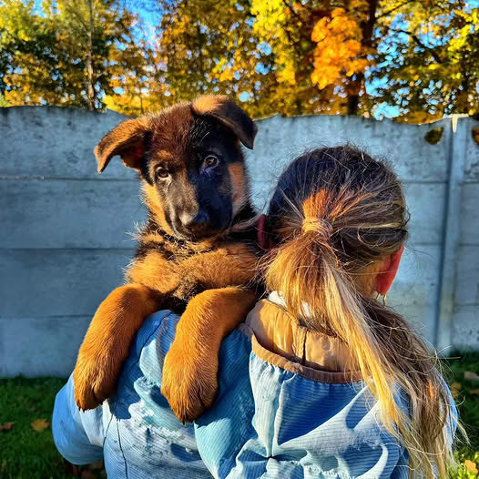
21.10.2026 | PIERWSZY CHŁOPAK Z OSTATNIEGO SKOJARZENIA JEDZIE DO NOWEGO DOMU!
Przed nami wyjątkowy moment!
Pierwszy chłopak z naszego ostatniego miotu opuszcza hodowlę vom Lauferhaus i wyrusza na spotkanie ze swoją nową rodziną.
Skojarzenie:
Ojciec: Hyltelands RIO
Matka: Hyltelands ULME
Życzymy maluchowi zdrowego wzrostu, wspaniałej przygody i wielu pięknych chwil z nowymi opiekunami! Niech wyrośnie na dumnego przedstawiciela swojej rasy i wiernego przyjaciela na długie lata.
vom Lauferhaus – tutaj zaczyna się nowa historia!
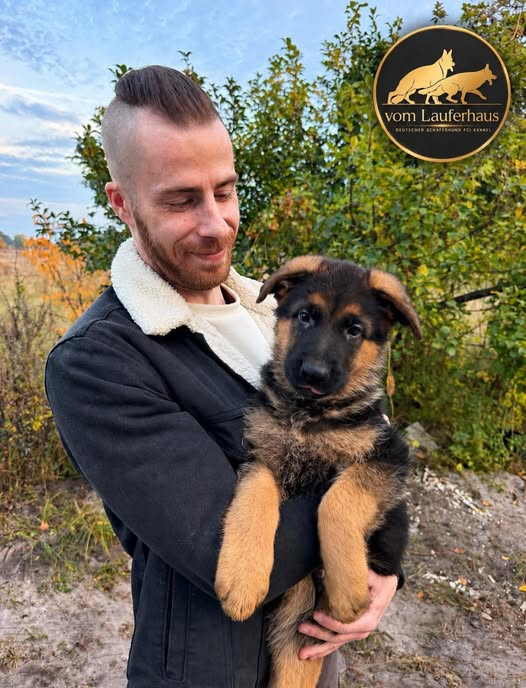
06.10.2026 | PIERWSZA WIZYTA U WETERYNARZA ZA NAMI!
Dziś był dla naszych maluchów bardzo ważny dzień!
Nasze szczenięta odbyły swoją pierwszą wizytę w Przychodni Weterynaryjnej Amicus w Zielonej Górze.
Podczas wizyty każde ze szczeniąt zostało dokładnie zbadane przez lekarza weterynarii. To dla nas niezwykle ważny moment, ponieważ zdrowie, prawidłowy rozwój i bezpieczeństwo naszych maluchów są dla nas absolutnym priorytetem.
Pierwsze szczepienie – zaliczone!
Znakowanie szczeniąt – wykonane!
Kontrola weterynaryjna – za nami!
Dla części maluchów było to pierwsze takie doświadczenie – nowe miejsce, nowe zapachy, dotyk lekarza i oczywiście mała dawka emocji.
Na szczęście wszystkie nasze szczenięta spisały się na medal!
Takie wizyty są niezwykle istotnym elementem odpowiedzialnego odchowu. Dbamy o to, aby nasze szczenięta opuszczały hodowlę nie tylko piękne i dobrze socjalizowane, ale przede wszystkim zdrowe, odpowiednio przygotowane do dalszego życia i z kompletem niezbędnych zabiegów profilaktycznych.
Dziękujemy zespołowi Przychodni Amicus w Zielonej Górze za profesjonalną opiekę i spokojne podejście do naszych najmłodszych podopiecznych.
A nasze maluchy? Po całym tym zamieszaniu oczywiście wróciły do domu i… jak gdyby nigdy nic!
Kolejny ważny krok za nami. Rosną, rozwijają się i każdego dnia pokazują swoje małe, wielkie charaktery!
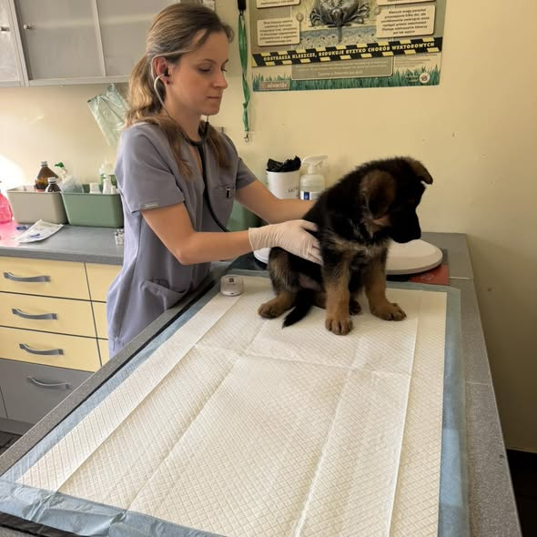
03.10.2026 | ULME & RIO – WYJĄTKOWE SKOJARZENIE, WYJĄTKOWA SUCZKA!
Dziś przedstawiamy jedną z dwóch suczek z naszego ostatniego skojarzenia ULME & RIO. Mała dziewczynka, która już od pierwszych tygodni przyciąga uwagę pięknym pigmentem, mocną budową i charakterystyczną głową owczarka niemieckiego.
To skojarzenie zostało przez nas dokładnie przemyślane – połączyliśmy dwa psy posiadające uprawnienia użytkowe i hodowlane oraz prawidłowe wyniki badań stawów.
O RODZICACH
Ojciec: HytteLand’s RIO
WT / IGP1 / KKL
HD/ED: normal/normal
DNA Gepr.
V: Boss von der Salehof
SG: Tammy vom Suentelstein
Matka: HytteLand’s ULME
WT / IGP1 / KKL
HD/ED: normal/normal
DNA Gepr.
V: Lasso vom Gräfenbrunn
SG: Ziger Hof Bitch
Połączenie tych linii daje nam szczenięta, w których widzimy duży potencjał zarówno do życia rodzinnego, jak i dalszej pracy czy sportu.
vom Lauferhaus – hodowla z pasją, doświadczeniem i planem na przyszłość.
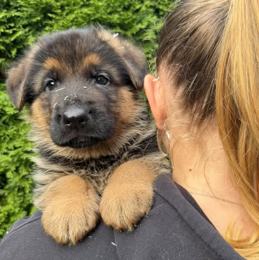
12.09.2026 | Mxsymus – ależ Ty wyrosłeś!
Mxsymus – nasz wyjątkowy chłopak, który w maju 2025 roku trafił do rąk Pani Kasi Cichopek i Pana Macieja Kurzajewskiego.
Minęło już trochę czasu, a zobaczcie tylko, jak dziś się prezentuje!
Piękny, dostojny, w świetnej formie i z tym charakterystycznym spojrzeniem, którego nie da się pomylić.
Najbardziej cieszy nas jednak to, że Mxsymus jest szczęśliwym, kochanym i zadbanym psem. A takie zdjęcia są dla hodowcy najlepszą nagrodą – wiedzieć, że wychowanek, któremu kiedyś poświęcało się tyle czasu i serca, dziś ma wspaniałe życie.
Na zdjęciu jego właścicielka
Mxsymus – ależ Ty wyrosłeś!
zdj. z profilu Pani Katarzyna Cichopek
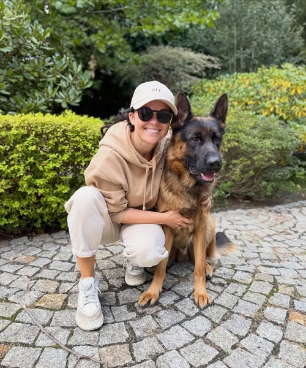
11.09.2026 | OSTATNIE SKOJARZENIE – RIO × ULME
Z ogromną radością przedstawiamy nasze ostatnie skojarzenie, z którego właśnie odchowujemy kolejny wyjątkowy miot.
Połączenie Hytteland’s RIO × Hytteland’s ULME zostało przez nas przemyślane pod kątem zdrowia, użytkowości, charakteru i potencjału hodowlanego.
Hytteland’s RIO
WT / IGP1 / KKL
HD/ED – normal/normal
DNA Gepr.
Hytteland’s ULME
WT / IGP1 / KKL
HD/ED – normal/normal
DNA Gepr.
To połączenie dwóch psów z bardzo dobrymi podstawami użytkowymi i prawidłowymi wynikami badań. Liczymy, że ich potomstwo odziedziczy po rodzicach nie tylko piękny wygląd, ale przede wszystkim stabilny charakter, zdrowie, temperament i chęć do pracy.
A CO U MALUCHÓW?
Szczenięta mają już 3 tygodnie!
Za nimi pierwsze odrobaczenie, a przed nimi coraz ciekawszy etap życia.
Otwierają oczy na świat dosłownie i w przenośni – zaczynają poznawać otoczenie, reagować na nowe bodźce i coraz aktywniej eksplorować swoją przestrzeń. Każdy dzień przynosi coś nowego, a my z ogromną przyjemnością obserwujemy ich rozwój.
To dopiero początek ich drogi.
RIO × ULME – połączenie, z którego jesteśmy naprawdę dumni.
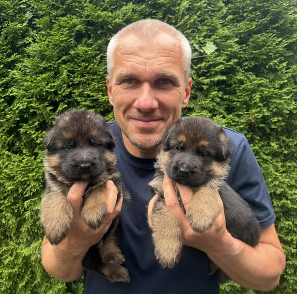
28.08.2026 | MIJA JUŻ 7. DOBA…
Mija właśnie 7. doba od narodzin naszych maluchów. To dla nas wyjątkowy moment – pierwsze dni są zawsze pełne emocji, troski i niepewności. Dziś możemy już z nieco spokojniejszą głową pochwalić się tym wyjątkowym skojarzeniem.
Przedstawiamy Wam rodziców naszych szczeniąt – wyjątkową parę, której połączenie od początku było dla nas bardzo przemyślanym wyborem.
OJCIEC – Hytteland’s RIO
WT / IGP1 / KKL
HD/ED: normal/normal
DNA Gepr.
V Boss von der Salchof
SG Tammy vom Suentelstein
MATKA – Hytteland’s ULME
WT / IGP1 / KKL
HD/ED: normal/normal
DNA Gepr.
V Lasso vom Grafenbrunn
SG Ziger Hof Bitch
To właśnie Rio i Ulme są rodzicami naszych czterech maluchów – dwóch piesków i dwóch suczek, które od tygodnia dzielą z nami każdy dzień.
Rodzice pochodzą z hodowli Pana Marcina i Moniki Zielińskich – za co jesteśmy ogromnie wdzięczni za możliwość realizacji tego skojarzenia.
Teraz przed nami najpiękniejszy czas – obserwowanie, jak nasze maluchy rosną, rozwijają się i każdego dnia pokazują swoje charaktery.
7 dni za nami… a przed nami cała piękna historia.
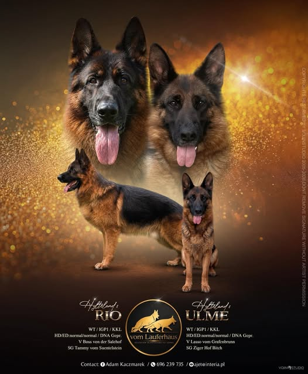
21.08.2026 | PAMIĘTACIE ZAPOWIADANY MIOT?
19 czerwca na naszym profilu pojawiła się zapowiedź wyjątkowego miotu. Od tamtej pory pewnie niejedna osoba zastanawiała się… co to za para i czego możemy się po niej spodziewać?
Na odpowiedź przyjdzie jeszcze chwila
Najpierw mamy dla Was najważniejszą wiadomość!
Wczoraj w naszej hodowli przyszły na świat 4 szczenięta!
2 pieski
2 suczki
Mama i maluszki czują się dobrze, a pierwsze godziny życia upłynęły spokojnie i pod czujnym okiem naszej rodziny.
To dopiero początek tej historii…
A skoro już wiecie, że miot jest na świecie, możemy powoli uchylić rąbka tajemnicy.
Zastanawiacie się, co to za połączenie?
Już niedługo przedstawimy Wam rodziców tego wyjątkowego miotu i opowiemy, dlaczego właśnie na tę parę postawiliśmy.
vom Lauferhaus
Ciąg dalszy nastąpi…
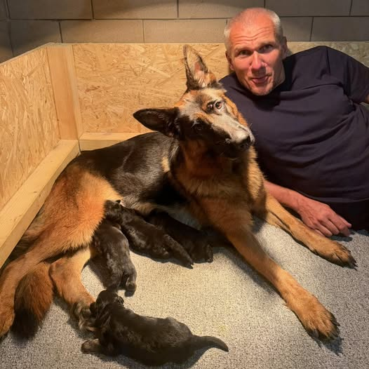
17.08.2026 | Bieg bez Granic
To wydarzenie to Nasze dziecko, corocznie wspierane i pielęgnowane przez osoby związane z Naszą hodowlą.
Fajnie, że w tym roku tak dobrze wyeksponowane.
DZIĘKUJEMY wszystkim tym, którzy w tym i w poprzednich latach tworzyli i tworzą to wydarzenie.
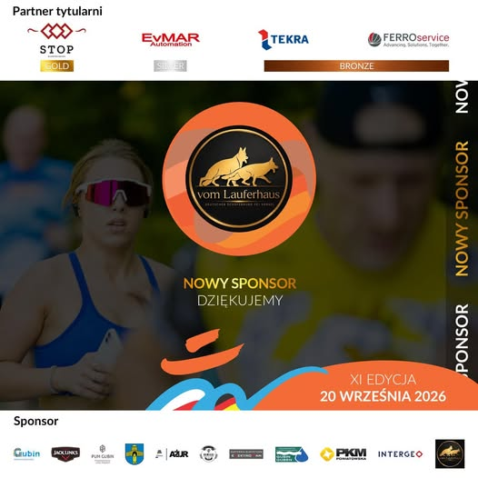
16.08.2026 | KOLEJNY PROJEKT W BIEGOWYM DOMU ZREALIZOWANY!
Czas na małe podsumowanie kolejnego etapu naszej wspólnej pracy nad Biegowym Domem.
Dziś możemy powiedzieć jedno – trawnik mamy kompletny!
Duża przestrzeń, równa murawa, piękna zieleń i przede wszystkim miejsce, które już niedługo będzie jeszcze bardziej tętniło życiem naszych owczarków niemieckich.
To kolejny element naszego projektu, który powstaje krok po kroku. Nie wszystko robimy od razu – ale właśnie dzięki temu możemy dopracować każdy szczegół i stworzyć miejsce, z którego jesteśmy naprawdę dumni.
Trawnik – GOTOWY
Biegowy Dom – rozwijamy dalej
Nasze psy – jak zawsze najważniejsze
Patrząc dziś na tę przestrzeń, aż trudno uwierzyć, jak wiele pracy zostało już wykonane. A najlepsze jest to, że to jeszcze nie koniec!
Przed nami kolejne pomysły, kolejne zmiany i kolejne etapy budowania naszego Biegowego Domu.
Bo hodowla to nie tylko psy i wystawy.
To przede wszystkim miejsce, w którym żyją, biegają, odpoczywają i dorastają nasi podopieczni.
Biegowy Dom – tworzymy go z pasji, dla naszych psów.
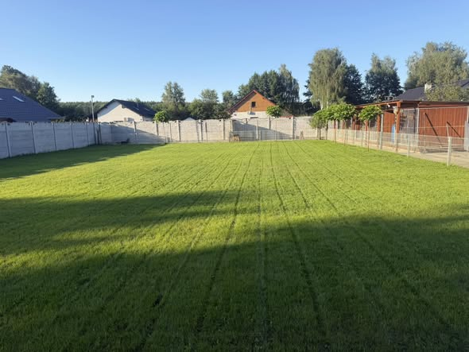
16.08.2026 | MAMY KOMPLET! OSTATNI SPONSOR XI EDYCJI BIEGU BEZ GRANIC!
To już naprawdę ostatni sponsor, który dołącza do grona Partnerów tegorocznego Biegu bez Granic – Lauf ohne Grenzen 2026!
Z ogromną radością przedstawiamy vom Lauferhaus – Deutscher Schäferhund FCI Zwinger, hodowlę owczarków niemieckich, która w tym roku wspiera nasze wydarzenie.
Cieszymy się, że również przedstawiciele lokalnego środowiska i pasjonaci sportu oraz psów chcą być częścią tego wyjątkowego wydarzenia. To właśnie dzięki takim partnerom możemy tworzyć imprezę, która z roku na rok nabiera jeszcze większego rozmachu!
20 WRZEŚNIA 2026
GUBIN – GUBEN
XI BIEG BEZ GRANIC – LAUF OHNE GRENZEN
5 km | 10 km | sport | emocje | granica, która łączy!
Dziękujemy vom Lauferhaus za zaufanie i wsparcie!
Witamy na pokładzie!
A wszystkim naszym Sponsorom i Partnerom tegorocznej edycji mówimy jedno:
RAZEM TWORZYMY WYDARZENIE, KTÓRE ŁĄCZY!
Do zobaczenia 20 września!
Partnerzy Tytularni:
Stop-Kunstschmiede Zäune aus Polen | EvMAR | TEKRA Sp z o.o. | Ferro Service
Sponsorzy wydarzenia:
Miasto Gubin | JACK LINKS | PUM GUBIN | Gmina Gubin | AŻUR Betoniarnia GUBIN | FRYZJER NOWICKI | ELEKTROMAN - Mariusz Ochotny | PRZEDSIĘBIORSTWO OCZYSZCZANIA ŚCIEKÓW GUBIN-GUBEN | PKM Poniatowska | INTERGEO - leszek_ochotny | vom Lauferhaus hodowla Owczarków Niemieckich FCI

13.08.2026 | PRZESTROGA DLA KUPUJĄCYCH – UWAŻAJCIE NA PSEUDOHODOWLE!
Niestety, nadal spotykamy się z przypadkami, w których pod szyldem „hodowli” i stowarzyszeń dochodzi do praktyk, które z odpowiedzialną kynologią nie mają wiele wspólnego.
W tym przypadku mamy do czynienia z miotem będącym wynikiem skojarzenia rodzeństwa – brata z siostrą. Co szczególnie bulwersujące, takie skojarzenie zostało podpisane i zalegalizowane przez prezesa stowarzyszenia, które dopuściło do wydania dokumentów dla tego miotu.
Jeden ze szczeniąt, według informacji, trafił z powrotem do „producenta” z poważnymi problemami zdrowotnymi.
To kolejny przykład pokazujący, jak ważne jest, aby przed zakupem psa dokładnie sprawdzić hodowlę, pochodzenie rodziców, rodowód oraz wiarygodność organizacji, która go wystawiła.
Sam „rodowód” czy przynależność do stowarzyszenia nie jest gwarancją odpowiedzialnej hodowli ani zdrowia psa.
Nie dajcie się zwieść pięknym zdjęciom, kolorowym dokumentom i hasłom o „legalnej hodowli”.
Sprawdzajcie. Pytajcie. Weryfikujcie.
Bo za każdą decyzją o zakupie szczeniaka stoi przede wszystkim żywe stworzenie, które może cierpieć przez nieodpowiedzialne decyzje człowieka.
UWAŻAJCIE NA PSEUDOHODOWLE I PSEUDORODOWODY!
Rodowód jest prawdziwy resztę dla przyciągnięcia uwagi zrobiło AI
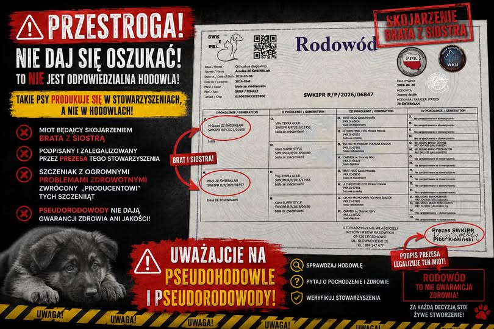
10.08.2026 | MIŁOŚĆ, KTÓRA NIE ZNA GRANIC
Dziś chcemy pokazać Wam wyjątkową więź, która najlepiej pokazuje, czym dla nas jest „Biegowy Dom” vom Lauferhaus.
Na zdjęciu Pan Grzegorz i trzyletnia suka z naszego Biegowego Domu – razem, spokojnie i z ogromną bliskością. To właśnie takie chwile są dla hodowcy największą satysfakcją.
Nie chodzi tylko o rodowód, osiągnięcia czy wygląd. Prawdziwa wartość hodowli to szczęśliwy pies, który jest pełnoprawnym członkiem rodziny, oraz człowiek, który może powiedzieć: „to mój najlepszy przyjaciel”.
Dziękujemy Panu Grzegorzowi za wspaniałą opiekę, miłość i codzienną troskę.
vom Lauferhaus – hodujemy z pasją, ale przede wszystkim z sercem.
Biegowy Dom – jeden dom, jedna rodzina, jedna wielka miłość do owczarka niemieckiego.
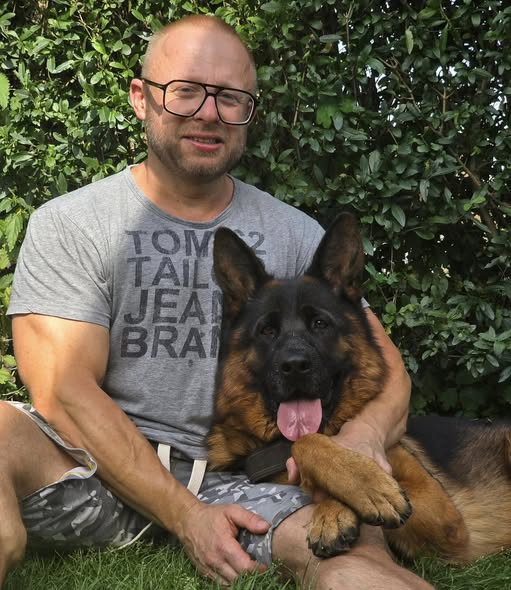
02.08.2026 | Czasem warto po prostu się zatrzymać…
Nie każdy dzień musi być pełen treningów, zabawy i szaleństw. Nawet najbardziej energiczne owczarki niemieckie doskonale wiedzą, kiedy przychodzi pora na chwilę odpoczynku.
W naszej hodowli vom Lauferhaus dbamy nie tylko o prawidłowy rozwój i socjalizację naszych psów, ale również o ich komfort, spokój i poczucie bezpieczeństwa. To właśnie równowaga między aktywnością a regeneracją sprawia, że wyrastają na zdrowych, pewnych siebie i zrównoważonych towarzyszy.
A nasza bohaterka ze zdjęcia? Wygląda na to, że ładuje baterie przed kolejną porcją zabawy.
Pozdrawiamy wszystkich miłośników owczarków niemieckich i życzymy spokojnej, udanej niedzieli!
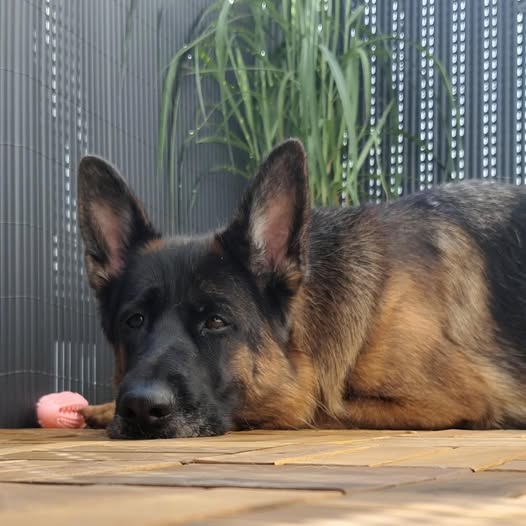
14.07.2026 | Nowy dom, nowe przygody… i pełnia radości!
Zawsze z ogromną radością otrzymujemy wiadomości i zdjęcia od właścicieli naszych szczeniąt. To dla nas najpiękniejsza nagroda za pracę włożoną w hodowlę.
Suczka z naszego ostatniego skojarzenia doskonale odnalazła się w swoim nowym domu. Jak widać, dopisuje jej świetny humor, nie brakuje energii do zabawy, a uszy coraz śmielej stają na baczność.
Życzymy jej długiego, zdrowego i szczęśliwego życia u boku swojej nowej rodziny. Dziękujemy za zaufanie i cieszymy się, że nasze maluchy trafiają do tak kochających domów.
Pozdrawiamy i czekamy na kolejne wieści z nowego etapu życia naszej dziewczynki!
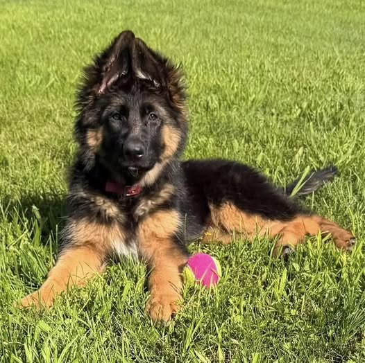
12.07.2026 | Jegomość JIMM vom Lauferhaus
Przedstawiamy JIMMA vom Lauferhaus – młodego psa pochodzącego z wyjątkowego, starannie przemyślanego skojarzenia.
RIIA – jedna z ostatnich córek WARRINKI,
ESSO – syn CELTICA z renomowanej hodowli vom Haus Tchorz.
To połączenie uznanych linii hodowlanych, w którym liczą się nie tylko rodowód, ale przede wszystkim charakter, anatomia i predyspozycje użytkowe.
JIMM rozwija się bardzo obiecująco, a każdy kolejny tydzień utwierdza nas w przekonaniu, że było to niezwykle ciekawe skojarzenie. Z zainteresowaniem będziemy śledzić jego dalszy rozwój i trzymać kciuki za jego przyszłe sukcesy.
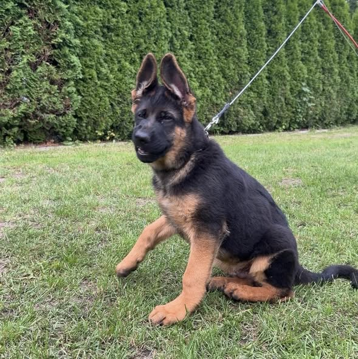
06.07.2026 | Dziś nadszedł ten wyjątkowy dzień…
Każde pożegnanie z naszym szczeniakiem jest pełne emocji, ale są takie chwile, które zapadają w pamięć szczególnie.
Ta piękna suczka z naszego ostatniego miotu wyjątkowo długo cieszyła nas swoją obecnością. Spędziła z nami pełne 12 tygodni, dzięki czemu mogliśmy obserwować, jak z dnia na dzień nabiera pewności siebie, poznaje świat i rozwija swój wspaniały charakter.
Dziś rozpoczęła nowy rozdział u swojej kochającej rodziny.
Jesteśmy przekonani, że będzie wierną towarzyszką, źródłem radości i dumy swoich nowych opiekunów.
Dziękujemy za zaufanie i życzymy Wam wielu wspólnych, szczęśliwych lat. Pamiętajcie, że drzwi hodowli vom Lauferhaus są dla Was zawsze otwarte – z przyjemnością będziemy śledzić, jak dorasta nasza dziewczynka.
Powodzenia, maleńka! Będziemy za Tobą tęsknić, ale wiemy, że trafiłaś do najlepszego domu.
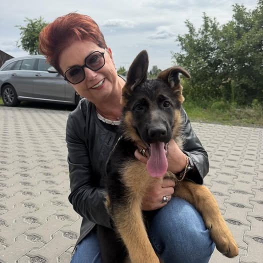
04.07.2026 | U nas nie ma miejsca na nudę – ciągle coś się dzieje!
W hodowli vom Lauferhaus rozpoczęliśmy właśnie kompletną renowację głównego placu.
Już wkrótce zamiast przygotowanej ziemi pojawi się piękny, gęsty, zielony trawnik, który będzie idealnym miejscem do zabawy, treningów i codziennych spacerów naszych owczarków.
Dbamy o to, aby nasze psy dorastały w jak najlepszych warunkach – przestrzeń, bezpieczeństwo i komfort są dla nas priorytetem.
To jeszcze nie koniec zmian… Już niedługo pokażemy Wam efekt końcowy. Jesteśmy przekonani, że będzie robił wrażenie!
Śledźcie nasz profil vom Lauferhaus – wspólnie zobaczymy, jak z dnia na dzień nasz plac zmienia się w zieloną oazę dla naszych czworonożnych przyjaciół.
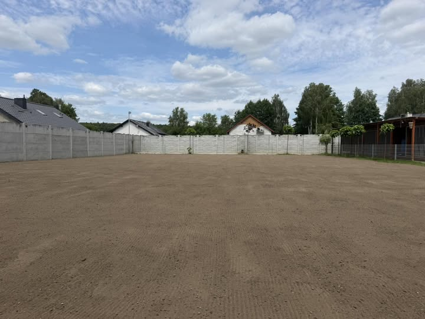
01.07.2026 | 1 lipca – Dzień Psa!
Dziś świętujemy tych, którzy każdego dnia uczą nas wierności, odwagi i bezwarunkowej miłości.
Dla nas w vom Lauferhaus pies to nie tylko hodowla – to członek rodziny, wierny przyjaciel i towarzysz na dobre i na złe. Każdy szczeniak, który przychodzi na świat w naszej hodowli, jest otoczony troską, miłością i najlepszą opieką od pierwszych chwil życia.
Z okazji Dnia Psa życzymy wszystkim czworonogom długiego, zdrowego i szczęśliwego życia, a ich opiekunom niezliczonych chwil radości, wspólnych przygód i dumy ze swoich psich przyjaciół.
Przytulcie dziś swojego psa trochę mocniej i koniecznie pochwalcie się jego zdjęciem w komentarzu!
Wszystkiego najlepszego dla wszystkich Psów!
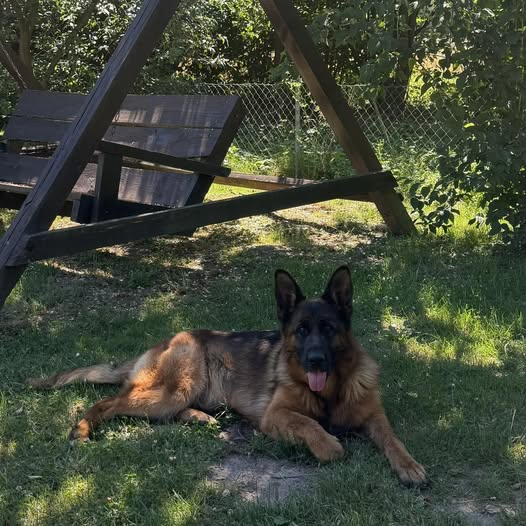
28.06.2026 | Objazd kontrolny naszych maluchów!
Dzisiaj odwiedziliśmy dwa pieski z naszego ostatniego miotu i nie ukrywamy – jesteśmy pod ogromnym wrażeniem!
Chłopaki rozwijają się znakomicie, mają świetny pigment, mocny kościec, piękne głowy i już teraz prezentują się naprawdę imponująco. To ogromna radość dla każdego hodowcy widzieć, jak nasze szczenięta rosną w kochających domach i z dnia na dzień stają się coraz piękniejszymi przedstawicielami rasy.
Takie chwile utwierdzają nas w przekonaniu, że warto poświęcać czas, serce i tysiące kilometrów, aby odpowiednio dobierać skojarzenia i dbać o każdy szczegół naszej hodowli.
Dziękujemy właścicielom za troskę, miłość i możliwość obserwowania, jak rozwijają się nasze „dzieci”.
Vom Lauferhaus – hodowla tworzona z pasji, wiedzy i miłości do owczarka niemieckiego.
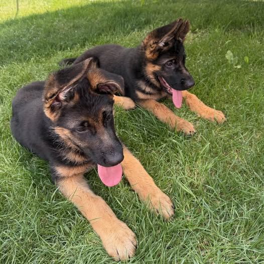
19.06.2026 | Dziś w hodowli vom Lauferhaus wydarzyło się coś wyjątkowego…
Po przejechaniu ponad 1600 kilometrów dopięliśmy ważny element naszych hodowlanych planów.
Za nami bardzo interesujące skojarzenie, o którym na razie nie zdradzimy zbyt wiele.
Powiemy tylko tyle – była to podróż, którą warto było odbyć. Jeśli natura będzie nam sprzyjać, możemy spodziewać się naprawdę obiecującego miotu, łączącego cechy, które cenimy najbardziej: doskonały charakter, zdrowie, użytkowość oraz wyjątkowe pochodzenie.
Na ten moment pozostajemy tajemniczy, ale już teraz warto śledzić nasz profil.
Trzymajcie kciuki, aby wszystko potoczyło się zgodnie z planem. Gdy tylko będziemy mogli zdradzić więcej szczegółów, nasi obserwatorzy dowiedzą się o tym jako pierwsi!
Czas pokaże, czy te 1600 kilometrów zaowocuje spełnieniem naszych hodowlanych oczekiwań.
Vom Lauferhaus – hodowla z pasją.
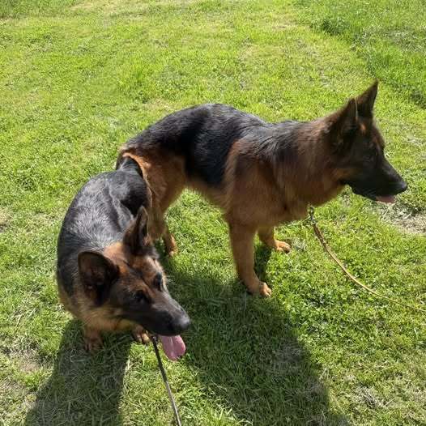
19.06.2026 | Nowa suka w hodowli vom Lauferhaus!
Z ogromną radością przedstawiamy naszą nową nadzieję hodowlaną – Hylteland’s CLEO
Cleo dołączyła do naszej hodowlanej rodziny dzięki Państwu Marcinowi i Monice Zielińskim, którym serdecznie dziękujemy za zaufanie oraz możliwość dalszego rozwoju tej wyjątkowej suczki. To dla nas duże wyróżnienie i ogromna odpowiedzialność.
Cleo pochodzi z bardzo interesującego skojarzenia cenionych linii hodowlanych. Jej ojcem jest V / SG9 BSZS’24 Jackpot vom Glockenbrink IGP3, natomiast matką SG Ziger Hof Irme IGP1.
W rodowodzie Cleo znajdują się doskonale znane psy:
Baisha di Casa Caputi 3-4
Arre vom Hühnengrab 4,4-5
Duran vom Team Hühnengrab 4-4
Data urodzenia: 10.01.2025 r.
HD/ED: normal / normal
DNA: potwierdzone
Cleo urzekła nas swoją budową, doskonałym pigmentem oraz harmonijnym charakterem. Wierzymy, że będzie wartościowym wzmocnieniem hodowli vom Lauferhaus i w przyszłości pozostawi po sobie równie wartościowe potomstwo.
Jeszcze raz dziękujemy Państwu Marcinowi i Monice Zielińskim za zaufanie oraz przekazanie nam tak wyjątkowej suki.
Witamy Cię w rodzinie vom Lauferhaus, Cleo!
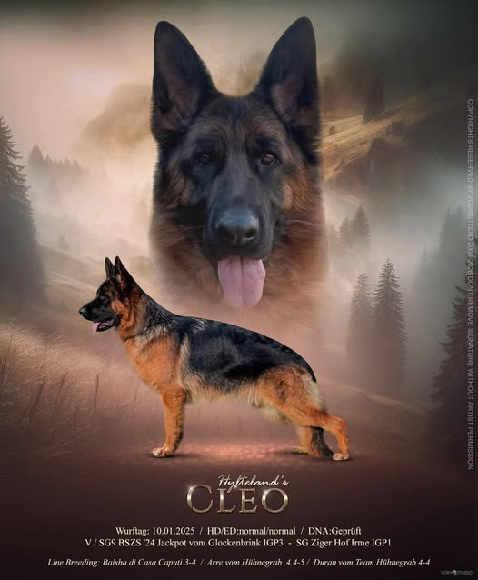
17.06.2026 | OWCZAREK NIEMIECKI FCI – wyjątkowa suka szuka kochającego domu
NIE DO HODOWLI
Z ciężkim sercem szukamy nowego, odpowiedzialnego domu dla pięknej suki owczarka niemieckiego po doskonałym skojarzeniu:
RIIA & CELTIC vom Haus Tchorz
Hodowla Owczarków Niemieckich FCI
Wiek: 36 miesięcy
Rodowód FCI
Po wstępnych prześwietleniach
Socjalizowana, wychowywana z troską i dbałością o prawidłowy rozwój
Mocna budowa, ciemna maska, świetna głowa i piękna szata
Doskonały materiał zarówno dla aktywnej rodziny, jak i osób zainteresowanych dalszym szkoleniem
Szukamy dla niej przede wszystkim odpowiedzialnego i kochającego domu, który zapewni jej uwagę, ruch oraz właściwą opiekę.
696 239 735
ajet@interia.pl
Zapraszam do kontaktu w wiadomości prywatnej lub telefonicznie. Chętnie udzielę wszystkich informacji i odpowiem na pytania.
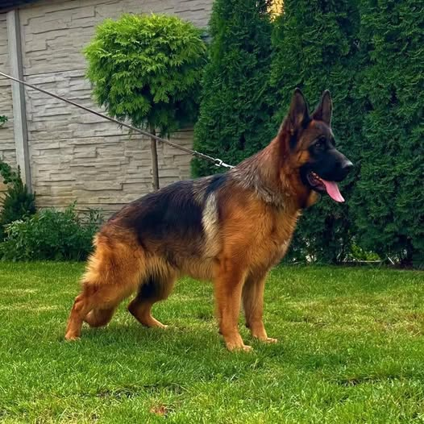
16.06.2026 | Co słychać u naszej suczki?
Pewnie zastanawiacie się, co słychać u jedynej suczki krótkowłosej z naszego ostatniego skojarzenia.
Już spieszymy z odpowiedzią – ma się świetnie! Jest zdrowa, radosna i każdego dnia coraz bardziej odkrywa otaczający ją świat.
Mamy też wspaniałą wiadomość – nasza mała dziewczynka jest już w rezerwacji i czeka na swojego Człowieka. Co najlepsze, jej przyszła rodzina również z niecierpliwością odlicza dni do spotkania z nią.
Pod koniec czerwca opuści rodzinny dom i rozpocznie nowy rozdział u boku swoich ukochanych opiekunów. Jesteśmy szczęśliwi, że trafi do ludzi, którzy już teraz obdarzyli ją ogromem miłości.
Dziękujemy za wszystkie wiadomości i zainteresowanie naszymi szczeniętami.
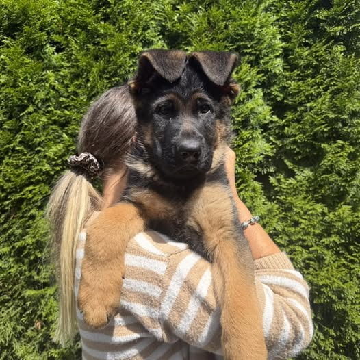
05.06.2026 | Ostatni z czwórki piesków
Ostatni z czwórki piesków właśnie wyrusza do swojego nowego domu…
To jeden z tych momentów, które w hodowli zawsze wywołują mieszane uczucia. Przez ostatnie tygodnie obserwowaliśmy, jak nasze maluchy stawiają pierwsze kroki, poznają świat, uczą się nowych rzeczy i każdego dnia rozwijają swoje wyjątkowe charaktery. Towarzyszyliśmy im od pierwszych chwil życia, dlatego pożegnania nigdy nie są łatwe.
Dziś przedostanie z rodzeństwa opuszcza hodowlę vom Lauferhaus, rozpoczynając nowy rozdział u swojej kochającej rodziny. Choć będzie nam go brakować, serce wypełnia przede wszystkim radość i duma. Wiemy, że trafia do domu, w którym będzie otoczony troską, miłością i odpowiedzialną opieką.
Każde takie pożegnanie przypomina nam, dlaczego robimy to, co robimy. Naszym celem nie jest tylko wychowanie zdrowych i dobrze socjalizowanych psów, ale także znalezienie dla nich rodzin, z którymi stworzą wyjątkową więź na całe życie.
Dziękujemy wszystkim opiekunom za zaufanie, którym obdarzają naszą hodowlę. Życzymy naszym maluchom wielu wspólnych przygód, pięknych chwil i szczęśliwego życia u boku swoich ludzi.
Powodzenia, maluchu! Będziemy z ogromną radością śledzić Twoje dalsze losy i obserwować, jak wyrastasz na wspaniałego przedstawiciela swojej rasy.
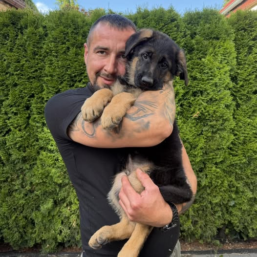
04.06.2026 | Kolejny nasz maluch wyruszył do swojego nowego domu!
Tym razem po swojego nowego przyjaciela przyjechał Pan Rafał, pokonując ponad 600 kilometrów. To naprawdę kawał drogi, ale jak mówi stare przysłowie – po najlepszego przyjaciela warto pojechać nawet na kraniec świata.
Takie chwile zawsze wywołują w nas mieszane uczucia. Z jednej strony jest wzruszenie, gdy kolejny szczeniak opuszcza rodzinny dom, a z drugiej ogromna radość, że trafia do ludzi, którzy są gotowi poświęcić czas, przejechać setki kilometrów i otworzyć swoje serce dla nowego członka rodziny.
Dziękujemy Panu Rafałowi za zaufanie i determinację. Jesteśmy pewni, że przed Wami wiele pięknych wspólnych chwil, długich spacerów, zabaw i niezapomnianych przygód.
Życzymy Wam mnóstwa szczęścia, zdrowia i samych cudownych momentów razem. A my, jak zawsze, będziemy z niecierpliwością czekać na zdjęcia i wieści z nowego domu.
Szerokiej drogi i powodzenia, maluchu! Niech Twoje nowe życie będzie pełne miłości i radości.
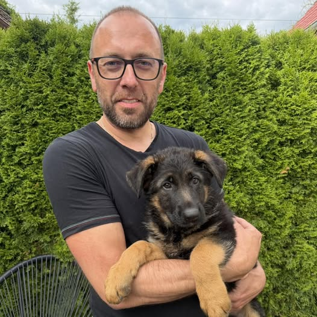
03.06.2026 | 2500 obserwujących – dziękujemy!
To dla nas wyjątkowy moment – profil hodowli vom Lauferhaus właśnie osiągnął 2500 obserwujących!
Dziękujemy każdej osobie, która jest z nami, śledzi rozwój naszych psów, kibicuje naszym sukcesom i dzieli z nami pasję do tej wspaniałej rasy. Wasze wsparcie, wiadomości, komentarze i zainteresowanie są dla nas ogromną motywacją do dalszej pracy.
Za każdą liczbą stoi człowiek, a za każdym polubieniem i obserwacją – zaufanie, które bardzo cenimy.
Przed nami kolejne wyzwania, plany hodowlane, sukcesy wystawowe i mnóstwo pięknych chwil, którymi będziemy się z Wami dzielić.
Dziękujemy za 2500 obserwacji i zapraszamy do dalszej wspólnej podróży z vom Lauferhaus!
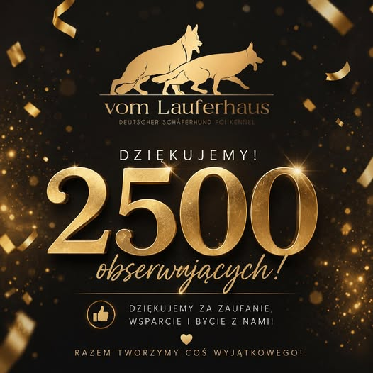
02.06.2026 | Kolejny piesek wyruszył do swojego nowego domu!
To zawsze wyjątkowy moment – pełen wzruszeń, radości i nadziei na piękną wspólną przyszłość. Dziś kolejny nasz wychowanek opuścił hodowlę, aby rozpocząć nowy rozdział życia u wspaniałych ludzi, którzy już od pierwszego spotkania skradli nasze serca swoim zaangażowaniem, troską i miłością do zwierząt.
Każde pożegnanie jest dla nas wyjątkowe. Przez pierwsze tygodnie życia obserwujemy, jak szczenięta rosną, poznają świat i rozwijają swoje charaktery. Dlatego ogromnie cieszy nas świadomość, że trafiają do domów, w których będą otoczone opieką, szacunkiem i bezwarunkową miłością.
Dziękujemy nowym opiekunom za zaufanie, jakim obdarzyli naszą hodowlę. Jesteśmy przekonani, że przed Wami mnóstwo wspólnych przygód, spacerów, zabaw i niezapomnianych chwil.
Życzymy Wam wielu lat szczęścia, zdrowia i wyjątkowej więzi, która z każdym dniem będzie stawała się coraz silniejsza. Pamiętajcie, że drzwi naszej hodowli zawsze pozostają dla Was otwarte, a my z radością będziemy śledzić dalsze losy naszego malucha.
Powodzenia w nowym domu, kochany ! Niech każdy dzień będzie pełen radości, odkrywania świata i miłości.
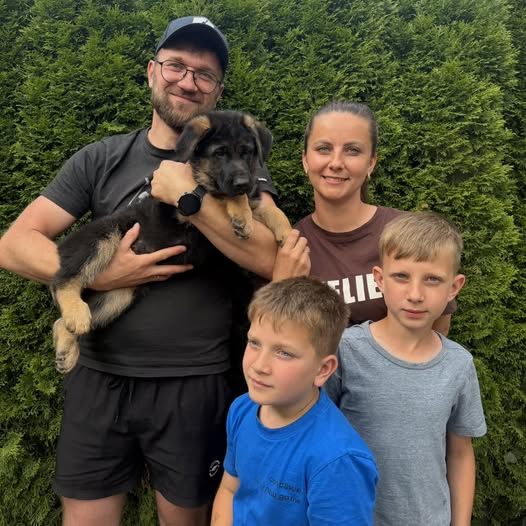
31.05.2026 | Chłopak w rękach uznanego hodowcy
Jeszcze przed końcem dnia kolejny z naszych chłopaków wyruszył do swojego nowego domu.
Trafił jednak nie w byle jakie ręce, lecz pod opiekę Pana Mirosława Tchorza z hodowli vom Haus Tchorz hodowla Owczarków Niemieckich FCI – osoby, której miłośnikom owczarka niemieckiego przedstawiać nie trzeba.
Pan Mirosław od wielu lat jest związany z rasą, a jego wiedza, doświadczenie i pasja budzą ogromny szacunek w środowisku kynologicznym. Dlatego z wielką radością i spokojem powierzamy mu naszego malucha, wiedząc, że czeka go wyjątkowa przyszłość.
To dla nas powód do dumy, że kolejny szczeniak z naszej hodowli będzie rozwijał się pod okiem tak uznanego hodowcy.
Trzymamy mocno kciuki za tego młodego dżentelmena i z niecierpliwością będziemy śledzić jego dalsze losy.
Powodzenia, chłopaku!
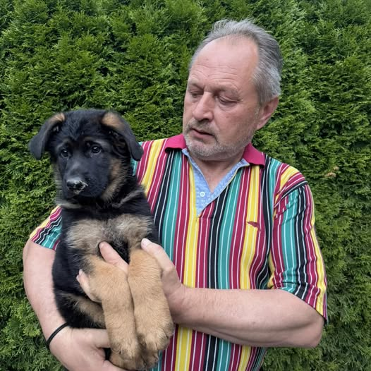
30.05.2026 | Kolejna szczęśliwa para odebrała swojego wymarzonego przyjaciela!
To zawsze wyjątkowy moment, kiedy nasi wychowankowie rozpoczynają nowy rozdział życia u swoich rodzin. Tym razem jedna z dwóch suczek z naszego miotu trafiła do wspaniałego domu, pełnego ciepła, miłości i zaangażowania.
Patrząc na uśmiechy nowych właścicieli, jesteśmy spokojni o jej przyszłość. Wiemy, że będzie otoczona troską, odpowiedzialną opieką i stanie się pełnoprawnym członkiem rodziny.
Dla nas, hodowców, takie chwile są niezwykle wzruszające. Każdy szczeniak od pierwszych dni życia jest otaczany opieką i uwagą, dlatego rozstania nigdy nie są łatwe. Jednocześnie ogromną satysfakcję daje nam świadomość, że nasze maluchy trafiają do ludzi, którzy od dawna marzyli o takim przyjacielu i są gotowi podarować mu najlepsze życie.
Życzymy Wam wielu wspólnych lat pełnych radości, niezapomnianych przygód, sukcesów w szkoleniu i bezwarunkowej psiej miłości.
Powodzenia, maleńka! Będziemy z dumą obserwować, jak dorastasz i rozwijasz się w swoim nowym domu.
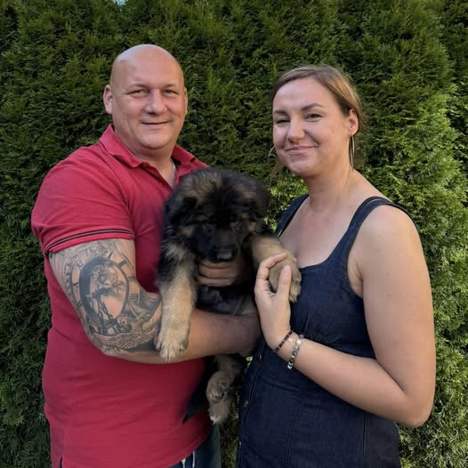
29.05.2026 | Trudne pożegnania
To jedne z najtrudniejszych chwil w życiu każdej hodowli, szczególnie gdy z naszymi podopiecznymi łączy nas coś więcej niż codzienna opieka – prawdziwa więź i ogromne emocje.
Choć pożegnania nigdy nie są łatwe, cieszymy się, że nasze maluchy trafiają do kochających i odpowiedzialnych domów. To daje nam pewność, że dokonaliśmy właściwych wyborów i że przed nimi piękne życie u boku swoich nowych rodzin.
Dziękujemy za okazane zaufanie. Życzymy Wam wielu wspólnych, szczęśliwych chwil i liczymy na dalszy kontakt oraz wieści o naszych podopiecznych.
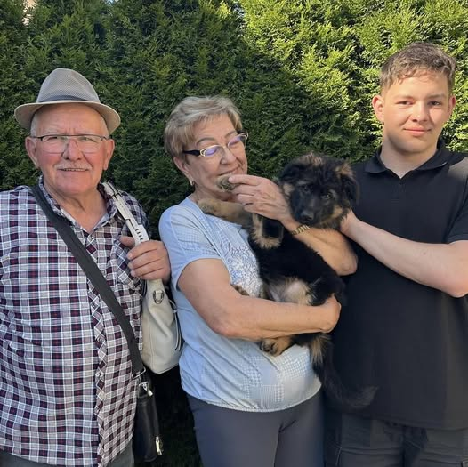
24.05.2026 | Zwolnił się jeden piesek z rezerwacji!
Maluch będzie gotowy do odbioru na początku czerwca
krótkowłosy
metryka FCI
umowa kupna–sprzedaży
zaczipowany
2× odrobaczony
1× zaszczepiony — adekwatnie do wieku
Piesek po świetnych rodzicach
Zapraszam do kontaktu i rozmowy
696 239 735
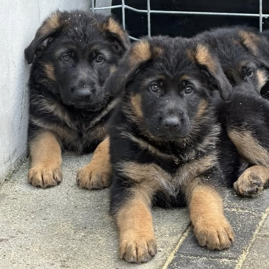
15.05.2026 | Pierwsze szczepienie i znakowanie
Po upływie sześciu tygodni nasze szczeniory zjawiły się w Przychodni Weterynaryjnej na pierwszym szczepieniu, znakowaniu oraz przeglądzie
Z radością oznajmiamy, że wszystko jest w porządku
Maluchy były bardzo dzielne i świetnie zniosły wizytę
Rosną jak na drożdżach, rozwijają się prawidłowo i każdego dnia dostarczają nam mnóstwo radości
Hodowla vom Lauferhaus
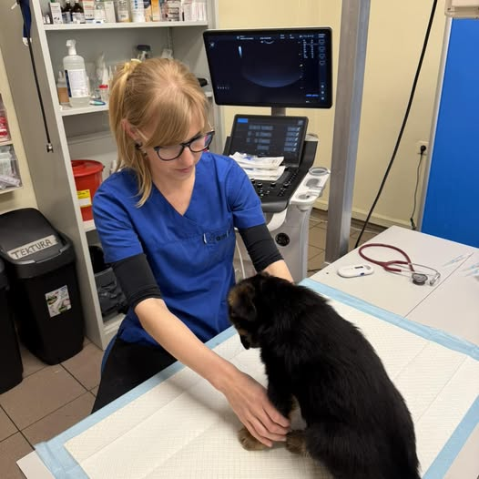
10.05.2026 | Pięć tygodni za nami
Dzisiaj nasze maluchy kończą już pięć tygodni
W pełnym słońcu prezentują się po prostu przepięknie — a jak się okazało, wśród ekipy są nawet dwa małe długowłose kłaczki
Największą radością jest jednak to, że wszystkie szczeniaki rozwijają się wzorowo, są zdrowe, pełne energii i z dnia na dzień pokazują coraz więcej swoich cudownych charakterków. Coraz śmielej poznają świat, bawią się ze sobą i zaczynają wyczekiwać swoich przyszłych człowieków
Maluchy są już po pierwszym odrobaczeniu, a po 15 maja czeka je znakowanie oraz pierwsze szczepienie.
Patrząc na nie trudno uwierzyć, jak szybko rosną
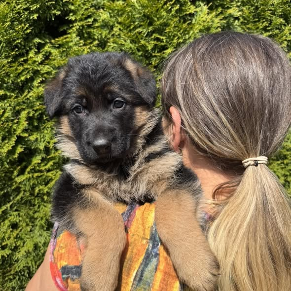
11.04.2026 | Wieści od właścicieli
Zdjęcie nadesłane przez właścicieli Jessica Paprocka suka z naszej hodowli w listopadzie skończy trzy lata, na długim włosie. Ze skojarzenia Riia&Celtic.
Obecnie urodziły się szczeniaki po Riia i synu Celtica, Esso.
Dziękujemy za opiekę i piękne odchowanie suki.
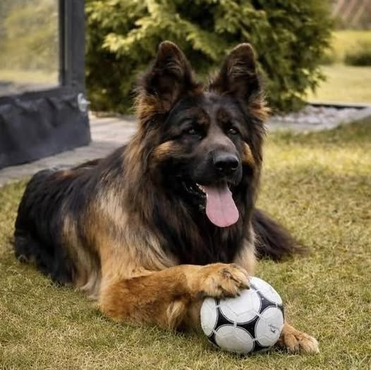
12.05.2025 | A zwą go...
Zwać go będą „Maximus Decimus Meridius" w wielkim skrócie tak zwyczajnie MAXIMUS - czy ktoś mógł by dla niego wymyślić lepszy scenariusz?
Nie sądzimy, w tym przypadku nawet my sobie go tak nie wyobrażaliśmy. Poznajecie tę parę wspaniałych ludzi Maciej Kurzajewski i
Katarzyna Cichopek i ON - Owczarek Niemiecki. Kolejny pies i kolejna wspaniała rodzina i kolejna historia, którą razem będą tworzyć.
Cieszymy się, że jesteśmy jej częścią Miroslaw Tchorz, Małgorzata Obremska i że pies trafił do miłośników rasy ❤️.
Oczywiście, nie zapominamy w tym wszystkim o Bono to ten starszy jegomość mający dwanaście lat, ale w świetnej kondycji -
z pewnością będzie dobrym nauczycielem manier dla młodszego kolegi.
Dziękujemy za miłą gościnę ❤️💐.
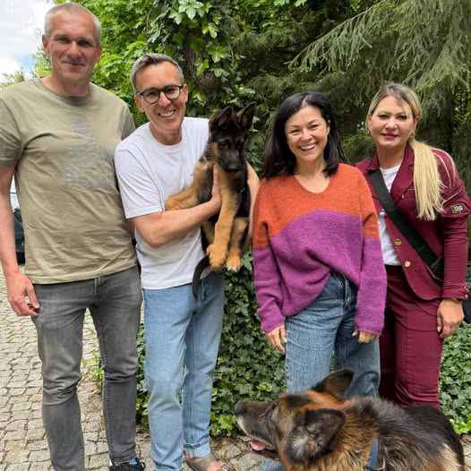
19.04.2025 | Historia z "Happy endem"
Kolejny pies i kolejni ludzie i wspaniała historia zakończona „happy endem”… z tym jegomościem ( psem ) wiązała nas szczególna więź ❤️,
tym bardziej cieszymy się że trafia w takie ręce - bo Marysia to najlepszy właściciel jaki mógł mu się trafić. Pies potrzebujący
jak żaden inny uwagi człowieka i oddający całego siebie właśnie człowiekowi.
Wesoła dwójka mieszka stosunkowo blisko więc mamy nadzieję na odwiedziny 🫣.
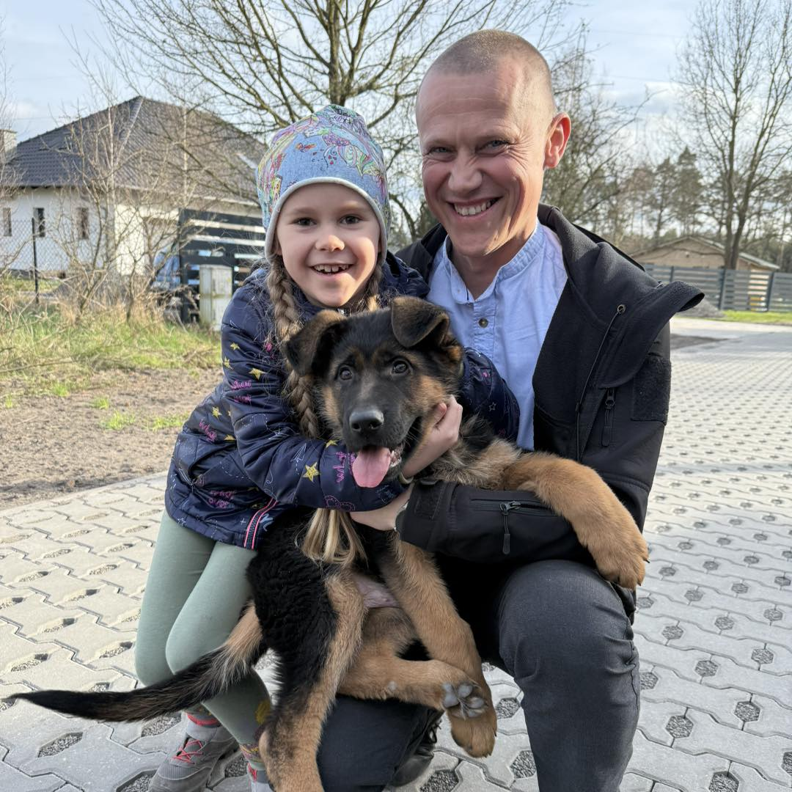
25.03.2025 | Niech mu się dobrze wiedzie w nowym domu
Kolejny chłopak rusza do nowego domu, więc czas się żegnać - tym bardziej trudno bo spędził z Nami więcej czasu niż zawsze zakładamy.
A do takich futrzaków łatwo się człowiek przyzwyczaja a potem trudno się rozstać.
Jednak trafia w dobre ręce i świat będzie poznawał w dobrym domu.
Życzymy cierpliwości w wychowaniu nowego członka rodziny i mamy nadzieję do zobaczenia.
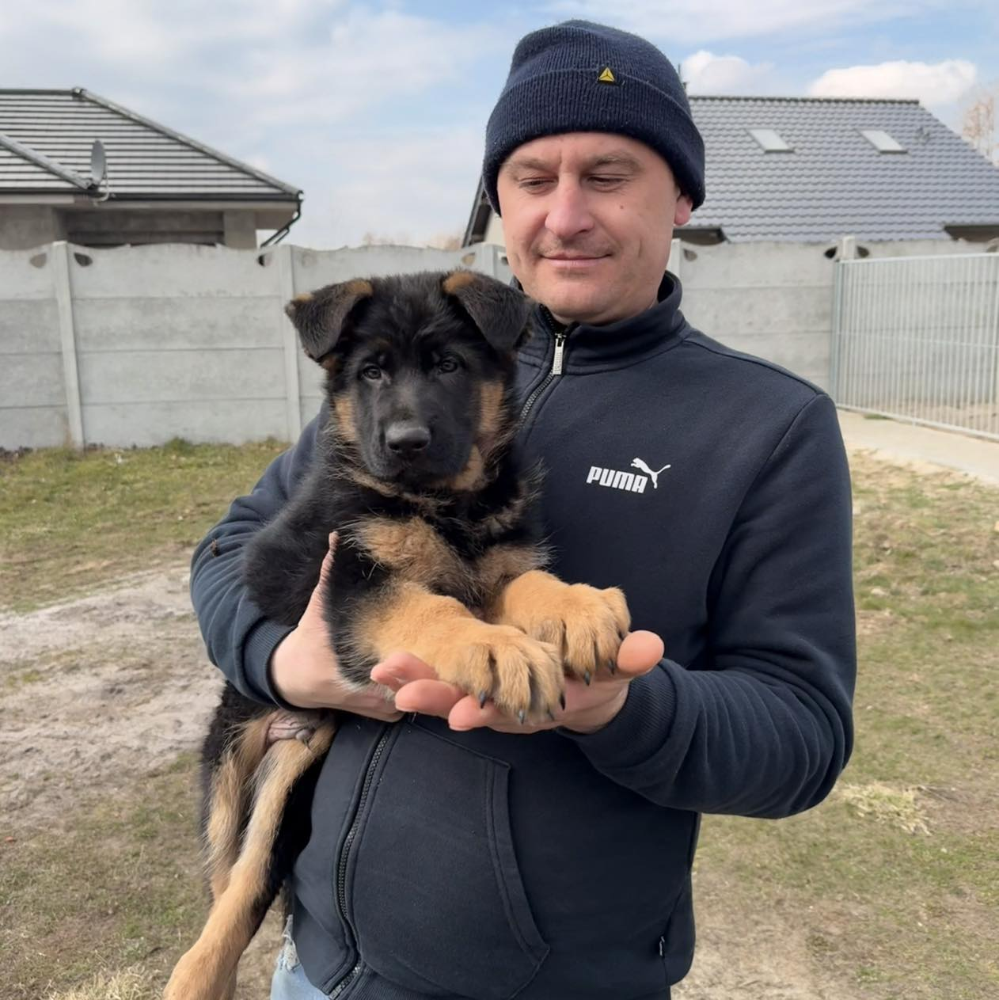
17.03.2025 | Kolejna wspaniała para
Kolejny fajny chłopak 👦 znajduje swoją fajną dziewczynę 👧. W tym przypadku nawet się nie żegnamy bo doskonale z dziewczyną się znamy ❤️.
Cieszymy się, że nasze zwierzęta znajdują uznanie wśród Naszych znajomych - to daje nam świadomość ogromnego zaufania.
Dziękujemy Mariusz & Hania i do szybkiego zobaczenia .
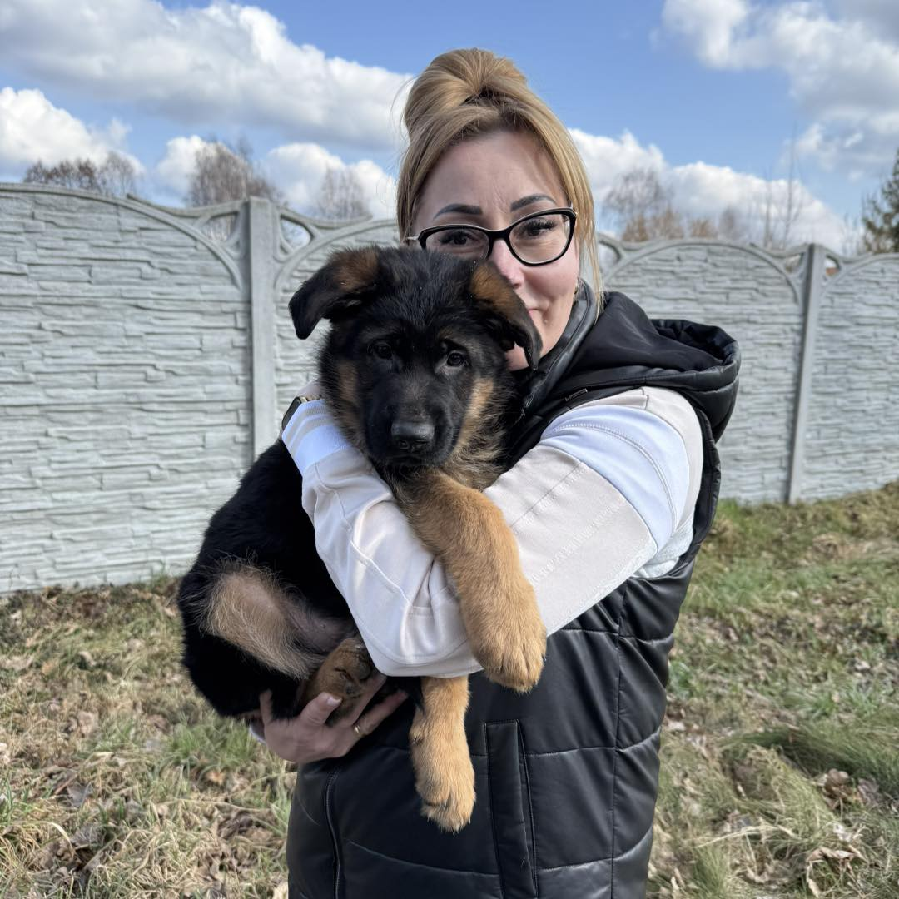
16.03.2025 | Pożegnania - lecz te wesołe
Dwa dni temu rozpoczęliśmy serial pod tytułem pożegnania - pierwszy z chłopaków znajduje świetny i znajomy dom 🏡. Stosunkowo niedaleko więc nie jest aż tak źle jak by się mogło wydawać.
Mamy nadzieję i złożyliśmy wszelkich starań, że będzie się zdrowo chował.
Tego i ogromnej cierpliwości życzymy nowym właścicielom ☺️.
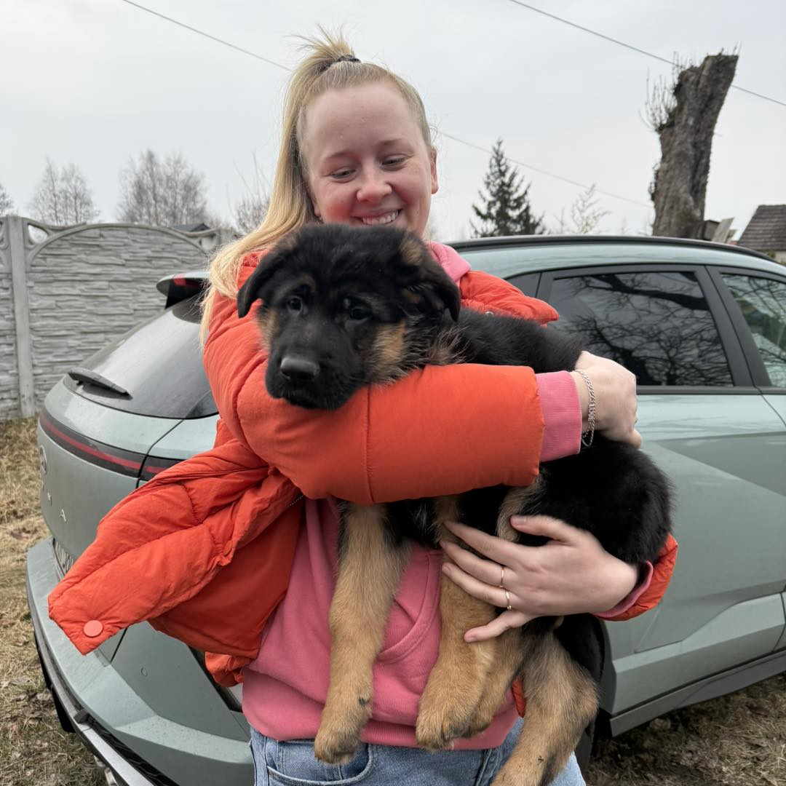
19.02.2025 | Nowe Skojarzenie
RIIA & ESSO mamy nadzieje na dobrze dobrane skojarzenie, urodzone 17 stycznia w piątek upłynie pięć tygodni,
do odbioru za trzy tygodnie dostępny jeszcze jeden piesek.
Zapraszamy do kontaktu.
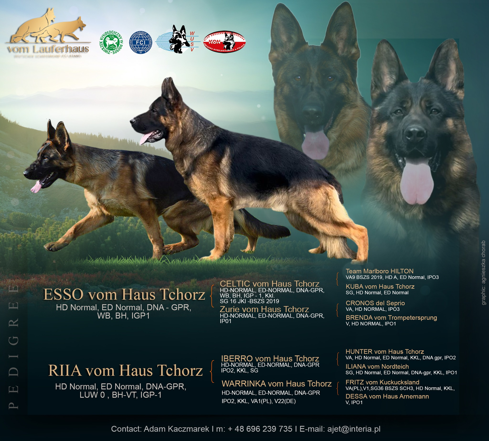
21.07.2024 | Nowe Skojarzenie
W piątek zgodnie z kalendarzem, ekipa stawiła się u Pani Ani na zaplanowanym szczepieniu i znakowaniu ( czipowaniu )
i jak to u Pani Ani - Wszystkie zostały dokładnie zaopatrzone obejrzane z każdej strony osłuchane i jak mówią fakty wszystko
jest w jak najlepszym porządku. Teraz pozostało wypatrywać nowych właścicieli i czekać na to co los przyniesie.
A my żyjemy nadzieją, że nie pomyliliśmy się w Naszych wyborach.
Pozdrawiamy 😘 i do zobaczenia 👋.
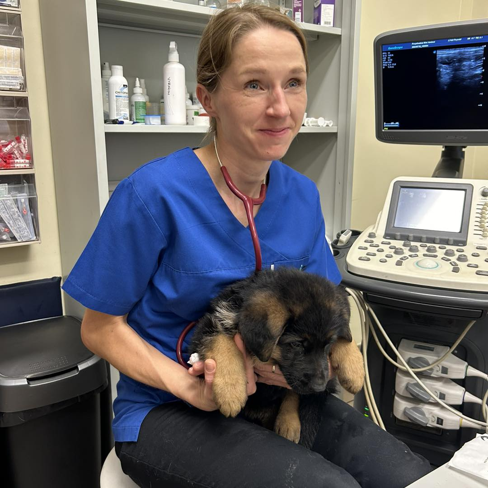
09.11.2023 | Mamy szczeniaki!
Tego dnia przyszły na świat cztery suczki i trzy pieski z bardzo dobrego skojarzenia - wola suczka i piesek.
Córka - WARRINKI vom Haus Tchorz V(SG11 BSZS JKL 2013),
RIIA vom Haus Tchorz - Matka szczeniąt,
Syn - BENNO vom Mahlstein V(BSZS),
KARL vom Haus Tchorz - Ojciec szczeniąt,
INBRED 3/3,
HUNTERA vom Haus Tchorz VA.
GOTOWE DO ODBIORU PO 04.01.2024
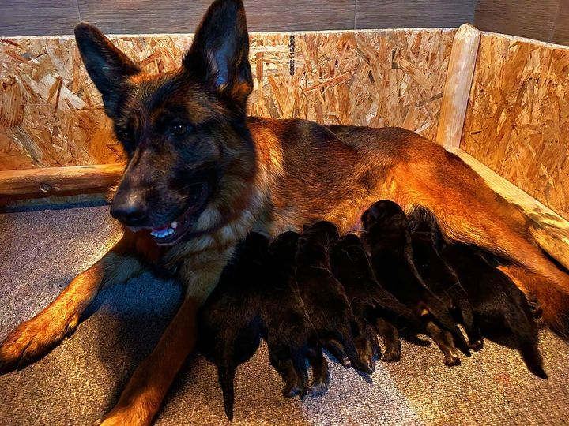
22.07.2023 | Doczekała się i ona
Ostatnia z dziewczyn cierpliwie wyczekała swoich nowych właścicieli. W tym przypadku wiemy, że oddajemy naszą wychowankę w świetne ręce. To, czego na pewno jej nie zabraknie to dobrego serca i miłości co dla zwierząt jest niemal niezbędne. Dziękujemy i w tym przypadku do szybkiego zobaczenia - czas który była z Nami stworzył więzi, które nie pozwalają się łatwo rozstać.
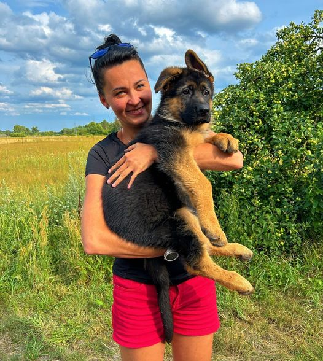
08.07.2023 | Jeszcze chociaż chwilkę...
Ta suczka miała przyjemność zostać z Nami dłużej mimo wcześniejszej rezerwacji. Mieliśmy przyjemność cieszyć się jej obecnością do dzisiaj. Jednak świadomi byliśmy, że ten czas nadejdzie - no cóż kolejni szczęśliwi właściciele i kolejny szczęśliwy pies. Serdecznie dziękujemy i dbajcie o siebie!
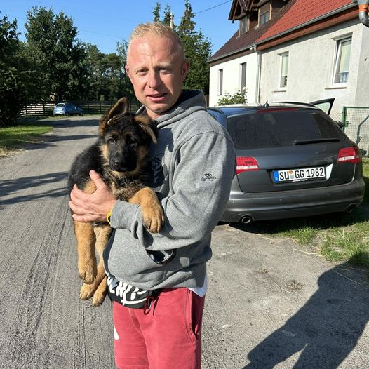
25.06.2023 | Powrót do kolebki
Kolejnego chłopaka dostarczamy osobiście do Nowego Właściciela trafia w piękne miejsce do domu a właściwie pałacu w Niemczech, owczarek niemiecki wraca do kolebki owczarka niemieckiego. Maik będzie nowym opiekunem Naszego czworonożnego przyjaciela. Cieszymy się, że Nasze zwierzęta trafiają w takie miejsca. Jesteśmy spokojni o jego los w rękach nowego właściciela. DZIĘKUJEMY ❤️.
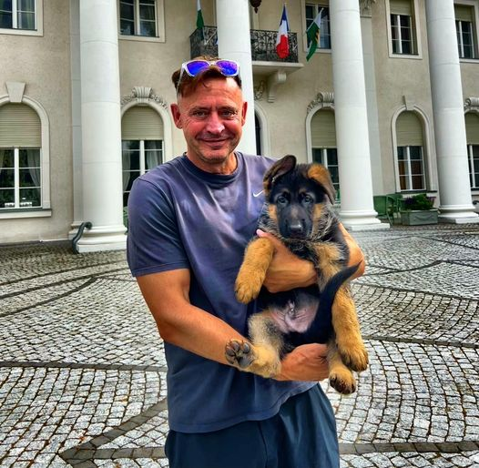
25.06.2023 | Piesek w ręce młodego bohatera
Kuba to młody człowiek, który poprowadzi i pokaże jak ma wyglądać życie temu szczeniakowi. Świadomy odpowiedzialności zjawił się z mamą po nowego przyjaciela. Bardzo się cieszymy bo Pani Kasia z rodziną była od samego początku z Nami począwszy od krycia suki do czasu odebrania szczeniaków.
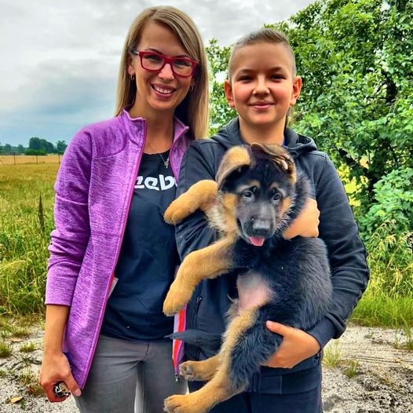
23.06.2023 | Pożegnanie
Takie pożegnania są najtrudniejsze, jednak zawsze oddając je w ręce ludzi mamy ogromną nadzieje, że to najlepsze miejsce na ziemi właśnie dla tego zwierzaka. Pan Zbigniew to nowy właściciel tej oto suczki, trzymaj się KOCHANA ❤️
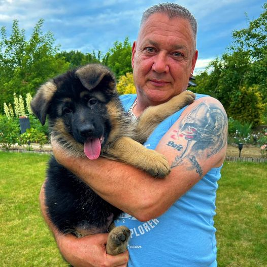
18.06.2023 | Misja Weterynaryjna!
W umykającym z prędkością światła tygodniu nasze „szczeniory” przeszły ostatni przegląd w klinice weterynaryjnej „Amicus” zostały zaszczepione i oznakowane (mikrochipem). Cała ferajna ma się dobrze brak uwag do towarzystwa po za tym, że stają się coraz bardziej nieznośne a to fakt - że zbliża się czas rozstania, i już w przyszłym tygodniu będziemy się żegnać z towarzystwem.
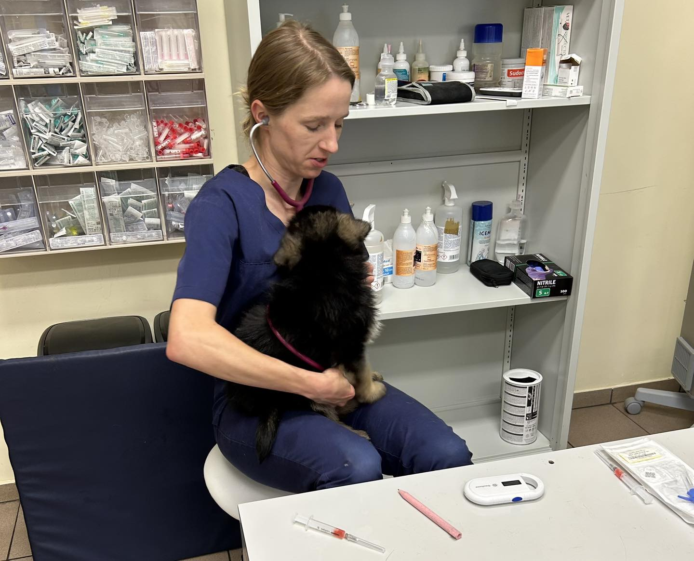
12.06.2023 | Pieski gotowe do oddania
Piesek z długim włosem i dwie suczki jedna z długim kłakiem i jedna z krótkim zostają do oddania z końcem czerwca świetne wsobne skojarzenie osobników z hodowli vom Haus Tchorz hodowla Owczarków Niemieckich FCI szczenięta w momencie oddania będą po przeglądzie miotu, będą miały wyrobione metryki, i będą dwa razy odrobaczone i raz zaszczepione. Przy odbiorze będzie można zapoznać się z całą dokumentacją rodziców